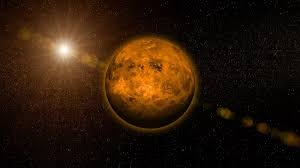
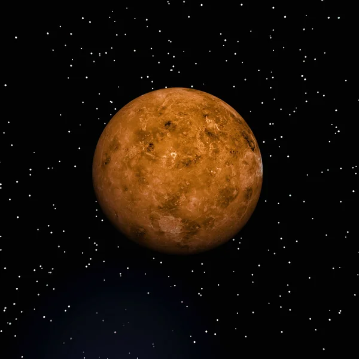
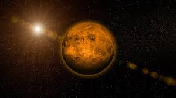
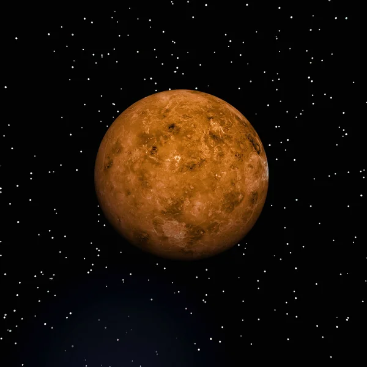
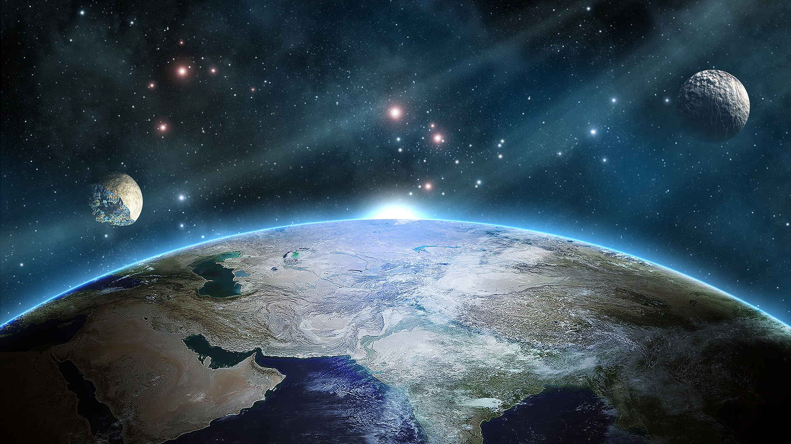
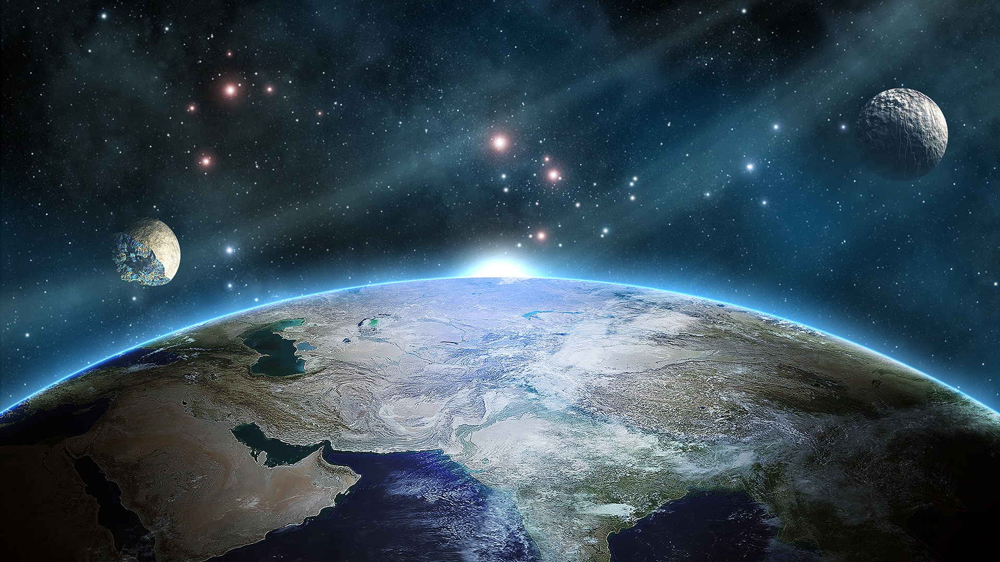
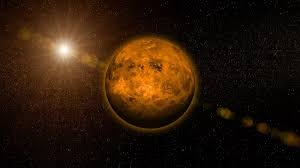
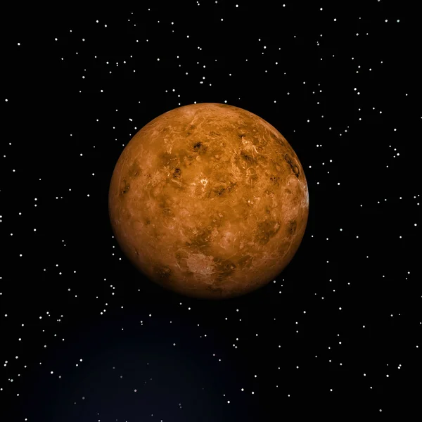

 

Планета Земля третя від Сонця планета Сонячної системи, єдина планета, на якій відоме життя, домівка людства. Земля належить до планет земної групи і є найбільшою з цих планет у Сонячній системі.Земля є предметом дослідження, значної кількості наук про Землю. Вивчення Землі як небесного тіла належить до царини астрономії, будову і склад Землі досліджує геологія, стан атмосфери — метеорологія, сукупність проявів життя на планеті — біологія. Географія дає опис особливостей рельєфу поверхні планети — океанів, морів, озер і річок, материків та островів, гір і долин, а також людських поселень та суспільних утворень: міст і сіл, держав, економічних районів тощо.
Планета Меркурій найближча до Сонця планета Сонячної системи. Обертається навколо Сонця за 87,969 земних діб. Меркурій належить до внутрішніх планет, оскільки його орбіта лежить ближче до Сонця, ніж пояс астероїдів. Після позбавлення Плутона статусу планети Меркурій є найменшою планетою Сонячної системи.


Планета Венера друга від Сонця та шоста за розміром планета Сонячної системи. Період обертання навколо Сонця — 224,7 земних діб. Названа на честь Венери, богині кохання з римського пантеону. Це єдина з восьми планет Сонячної системи, яка отримала назву на честь жіночого божества. За розміром майже така ж, як і Земля.